Technology Building Blocks -
Embeddable AI & Automation
Agents
Data for AI
Trusted AI
Application Stack

Build & Deploy
Observe
Optimize
Agents
Data for AI
Trusted AI
Build & Deploy
Observe
Optimize
IBM’s Technology Building Blocks are ready-to-use, embeddable assets that combine Data, AI, and Automation technologies to accelerate development, integration, and deployment across industries.
Each building block serves as a reference implementation that illustrates how IBM’s Data & AI and Automation platforms can seamlessly integrate into enterprise applications. These reusable assets deliver tested engineering patterns, making it easier for teams to accelerate delivery, reduce development complexity, and achieve faster time-to-value.
By standardizing these Technology Building Blocks, IBM establishes a foundation of consistent delivery practices, scalable architectures, and repeatable partner demonstrations. This unified approach empowers teams to deliver measurable outcomes across key enterprise priorities — including governance, observability, scalability, and cost optimization — all while driving efficiency and innovation across hybrid and multicloud environments.
Watsonx Orchestrate and watsonx.ai for task automation and orchestration.
Data pipelines and retrieval systems built on watsonx.data and open tooling.
Governance, fairness, and explainability for responsible AI operations.
AI-driven cost optimization and resource management.
End-to-end observability and performance analytics with Instana.
Deployable configurations that generate new code snippets using NLP.
We’d love to hear your thoughts on IBM’s Technology Building Blocks. Your feedback helps us continuously improve these assets and enhance your experience.
Provide FeedbackAll feedback is reviewed by the IBM Building Blocks team.
Access IBM’s Technology Building Blocks via our GitHub repositories .
Explore, deploy, and extend these reusable assets to accelerate your AI and automation initiatives across hybrid and multicloud environments.